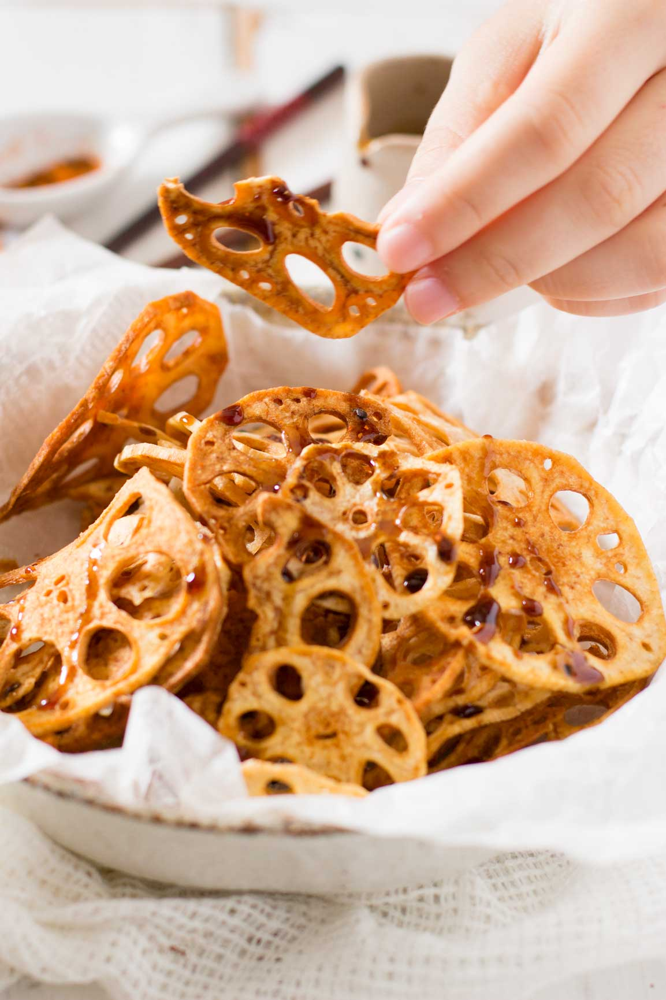

Rekon Chips with Amazu sauce


Renkon chips with amazu sauce is a staple and popular appetiser in many Japanese restaurants in Brisbane.
"Renkon" means lotus roots in Japanese and because it is popular appetiser, many people know that “renkon” is lotus roots nowadays.
Ingredients
- 250 g frozen sliced Renkon (lotus roots)
- Oil for deep fry
Amazu Sauce
- 1 tbs soy sauce
- 1 tbs sake
- 1 tbs sugar
- 1 tbs mirin
- 1/2 tbs rice vinegar
How to make Renkon Chips and Amazu Sauce
Renkon Chips
- Defrost the sliced renkon on a paper towel to let the paper towel absorb the water.
- Wipe the excess water off with more paper towels.
- Heat enough oil to deep fry the sliced renkon to 180 degree.
- Add the sliced renkon and deep fry for about 5 minuets or until lightly brown. You will see a lot of bubbles forming around the renkon. When it stops forming any bubbles around the renkon and the colour of renkon is brown, it is ready to scoop out of the oil.
- Drain the excess oil by scooping out the renkon on to a paper towel.
- Serve on a plate or bowl and drizzle the Amazu sauce and sprinkle a pinch of Shichimi togarashi.
Amazu Sauce
- Combine all the ingredients in a small sauce pan.
- Heat the small sauce pan on high heat and bring the sauce mixture to boil.
- Turn the heat down to medium and simmer.
- Turn the heat off when the sauce is reduced and thickened.
- Pour it in a small sauce dispenser and drizzle over the renkon chips.